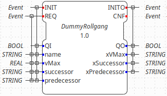
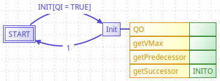
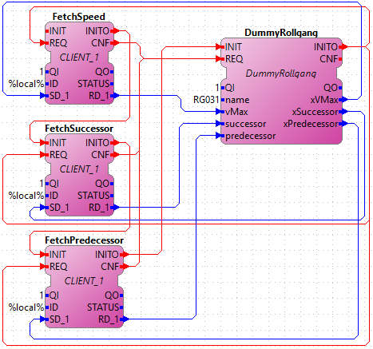

This section will show you how to make applications communicate with a BaseX database through XQueries. This allows a component, to initialize itself by accessing its asset administration shell, in terms of an XML database. The component is controlled by a specific function block, which produces XQueries to initialize its inputs with values received or calculated from a BaseX database.
The section is devided into three parts. The first part explains how to build the 4diac-rte to run an application which sends XQueries. The second part explains how to setup your BaseX database. And the thrid part shows how to create an application within the 4diac-ide which sends XQueries. The exmple AutomationML file as well as this implementation has been realized as part of the BaSys4.0 project, which receives funding of the Federal Ministry of Education and Research.
At first checkout BaseX from GitHub to get the C API from BaseX. In the downloaded folder you find the C API under .../basex-api/src/main/c. Please consider that with the officially available C API from BaseX the authentification to a BaseX database currently fails under Windows.
Then configure CMake to build the 4diac-rte. If you do not know how to build the 4diac-rte read the build instructions first. Besides the usual configuration activate the Xquery Client.
Press the Configure button in CMake to get the settings for the Xquery Client. Configure the appearing settings. Under Linux the openSSL include directory might be at /usr/include/x86_64-linux-gnu/openssl. The openSSL libraries libcrypto.a and libssl.a might be at /usr/lib/x86_64-linux-gnu/.
Press the Configure button within the CMake GUI until none of the lines is red. Afterwards press the Generate button of the CMake GUI. Then build the 4diac-rte.
Get BaseX for your system from here. After starting BaseX, load your AutomationML or XML file into BaseX by clicking Database/open and manage. As an example AutomationML file you can use the Pallet System Model. This example AutomationML file has been created during the BaSys4.0 project, which receives funding of the Federal Ministry of Education and Research. Within the General tab enter the path to your file and select the proper input format. In case you use an AutomationML file or XML, choose XML. Then press OK. Your database will be loaded. You can now test any XQuery within the GUI of BaseX. For further explanation or in case of any problems please have a look at the manual of BaseX.
Now change to the bin directory of your BaseX installation. Start the BaseX server there. The output should be the BaseX version and the port where you can reach to your database.
To send XQueries to your database, create a proper basic function block, which produces the desired XQueries. The following images show a possible interface and execution control chart for a basic function block whicht fetches values from your BaseX database during initialization.
 The algorithm getVMax contains an XQuery which is supposed to calculate the maximum speed of a roller conveyor from values of the database. Since the 4diac-ide currently does not provide support for an XQuery algorithm language, you have to use AnyText as algorithm language. The AnyText language is interpreted as C++ code during export of your function block. Your XQuery is assigned to the desired STRING output of your basic function block, in this case xVMax. In case you also want to replace certain elements in your XQuery, maybe by values from your function block's interface, you have to split the String. The interface value is then added as parameter of the append method, supported by the 4diac-rte, e.g. name().getValue(). The rest of your XQuery is appended afterwards. This could look like the following algorithm code for getVMax.
The XQuery algorithm code for getPredecessor could be as follows:
The XQuery algorithm code for getSuccessor could be as follows:
Please consider that your XQuery is dependent on the data structure of your database. In this case it is the structure of an AutomationML file for a Pallet System. After you have created your test function block, export it and build your 4diac-rte with it. Please have a look at the build instructions if you do not know how to build your own function block.
Now you can use your test function block wihtin an application. To send the XQueries to your BaseX database, add a CLIENT_1 for each query you want to send. Please consider that currently only a CLIENT_1 is supported, where you connect the SD_1 input with the xquery producing output of your test function block. The result of the XQuery is received by the RD_1 output. A possible test application is shown in the following image. Within this application a roller conveyor is initialized by its maximum speed, and its neighbouring roller conveyors.
The ID input of the CLIENT_1 function block contains a variable %local% which is replaced by a proper value during deployment. The ID is configured with the protocol name, the IP address of the computer, where your BaseX database is running, the port where your BaseX server listens for requests, the name of your database, a user name and a password. For the example database running on your local machine, the ID can be as follows:
After you have completed your application, mapp your application to a proper device and start the 4diac-rte you built before. Then deploy your application to the 4diac-rte you started. If everything worked correctly the 4diac-rte should produce something like that:
If you monitor your application you should get the results from the XQuery requests at the corresponding inputs of your test function block.
Go back to Protocols index:
If you want to go back to the Start Here page, we leave you here a fast access
Or Go to top